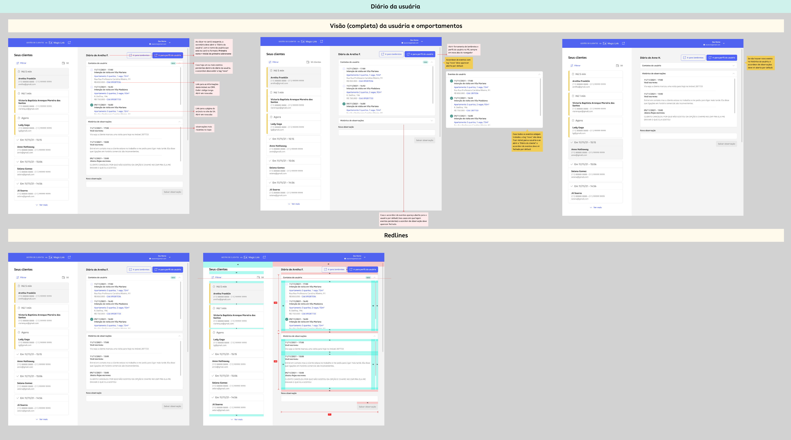

context
The Secretariat team was juggling three systems plus spreadsheets just to manage leads due to a systems integration process, since this team was part of a company that was acquired by QuintoAndar.
main problems
- No integration between systems
- Inefficient, manual workflows
- Decreased productivity
design opportunity
Build a centralized tool tailored to their needs, based on how they already worked—and how they wanted to work.
impacts
- Workflows are estimated to be ~30% faster
- Stakeholders were impressed by how tailored the system felt
In just 12 weeks, we designed and released a custom CRM from scratch for the Sales Secretariat team. The project aimed to replace fragmented tools with a more integrated system and improve their daily productivity. It was a user-centered, design-led effort, built on solid prior research and strong team alignment.
what guided us
Keep it simple. Keep it familiar. Integrate what matters.
long term
We completed the delivery of the first version with at least 5 end-game features in the backlog.
A quick demonstration of navigation in the first version of the CRM prototype's, before the official release.

Part of the CRM handoff from the sales department of QuintoAndar, including behavior specifications and some redlines to front-end devs.
workshops
- Ran 7 Lean Inception sessions with the project's squad to align on MVP features
- Facilitated a Crazy 8's workshop for rapid ideation
- Conducted a card-sorting session with some analysts from the sales department to co-create the information architecture of the platform.
- Ran at least 2 design critiques with the design team to refine the UI
wireframes
- Low-fidelity sketches in FigJam helped us explore and compare ideas
- Conducted a team trade-off to choose the most viable path
prototypes
- Built medium-fidelity flows to validate with users
- Refined into high-fidelity UI once we aligned on design and DS components
testing
- Applied Cognitive Walkthroughs with 5 participants in person
- Focused on testing learnability and early friction points
Skills sharpened
- MVP scoping through Lean Inception methodology
- Trade-offs in design ideation
- Managing design under time pressure
What I'll carry forward
- Test with users—but critique with designers first
- Don't wait to align with stakeholders
Personal
Proved my value and built trust as the solo designer after the previous senior left